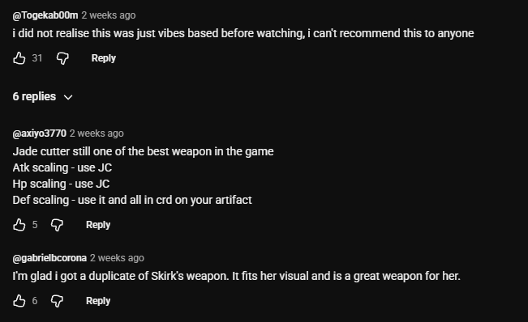
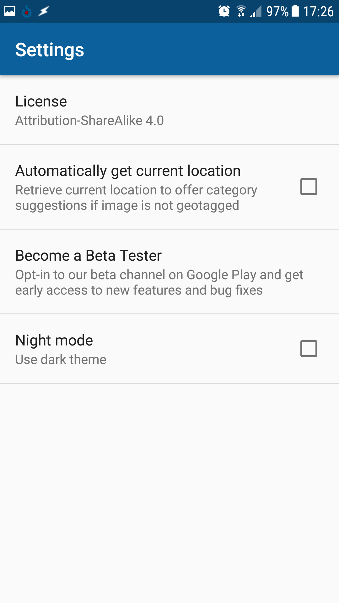
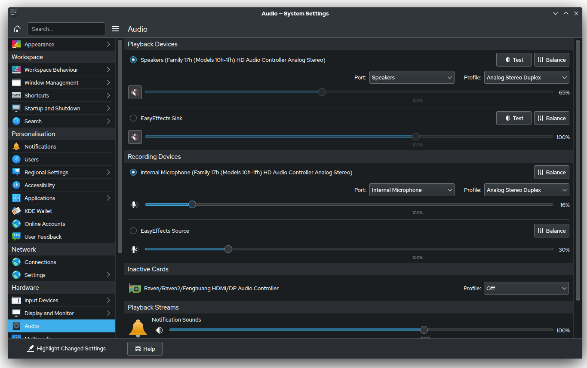
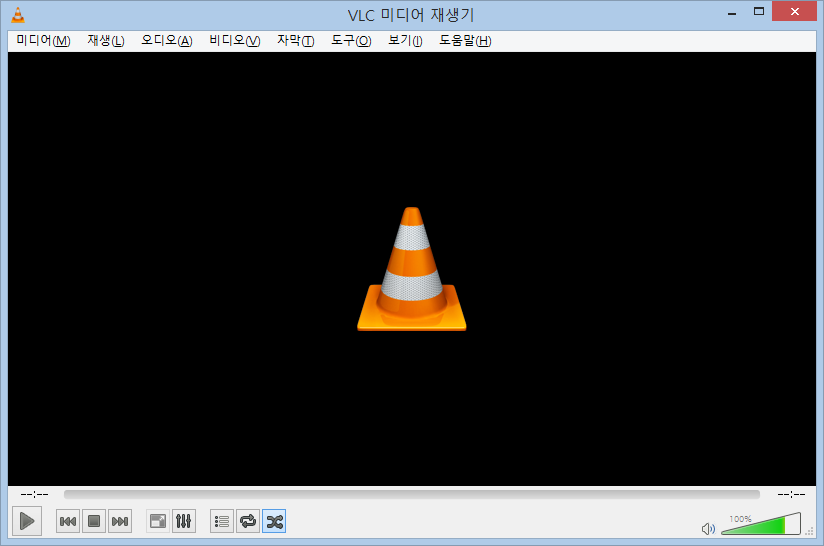
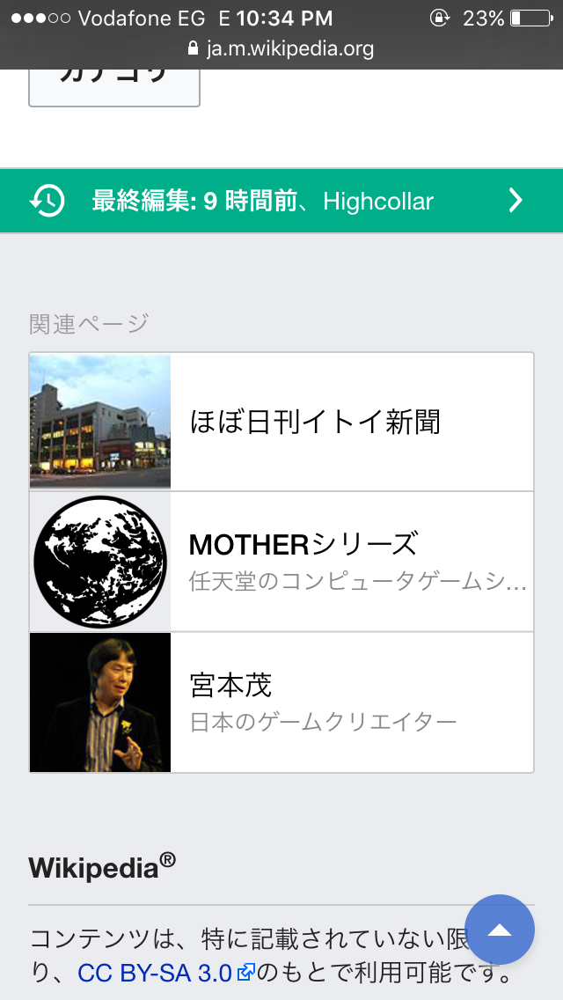
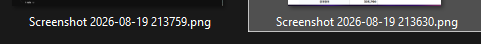
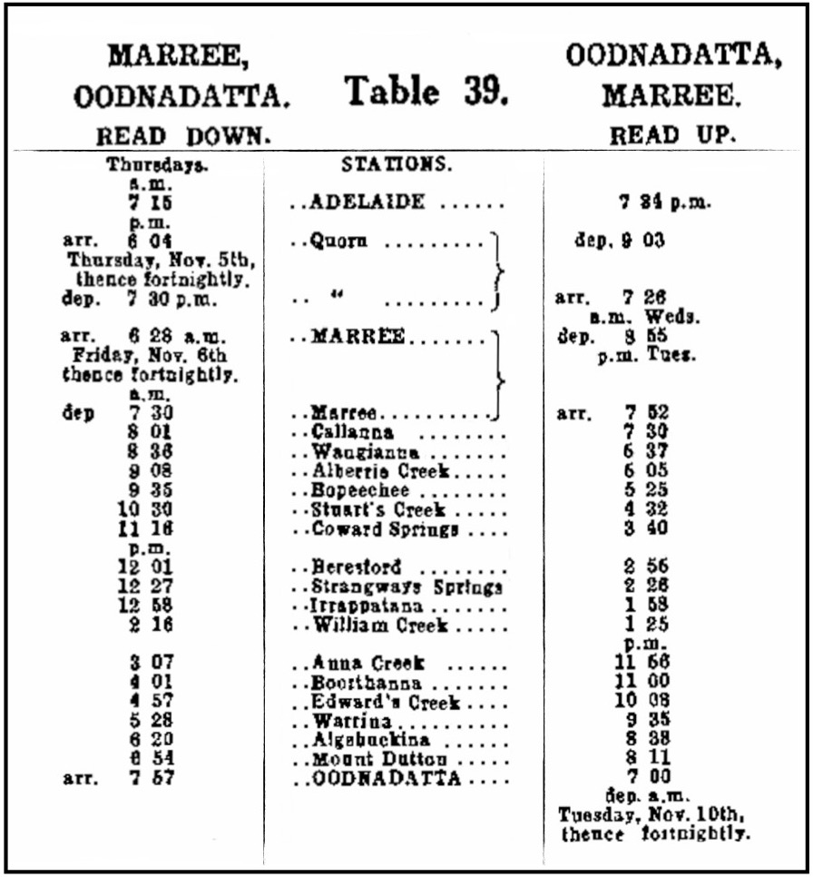
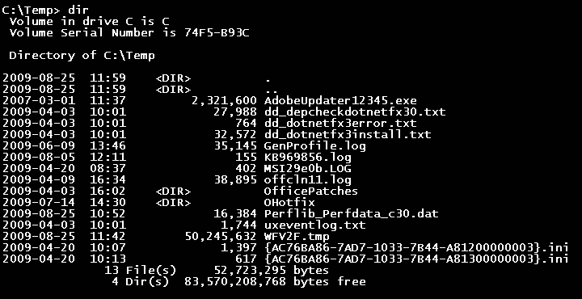

1 — large Play button at bottom-left
Red rectangles are coordinate-click ground truth; green rectangles are screen-text localization ground truth. Neither is sent to models. Confirm that each localization rectangle covers one complete visual line or compact paragraph without neighboring content. The localization section is a separate three-level diagnostic and does not enter catalog history. For OCR, compare the exact model input shown here with the reference in manifest.json; levels 4 and 5 show their runtime crops.
1 — large Play button at bottom-left

2 — Math Formula item

3 — Check for updates button

4 — red X closing Fill and Stroke

5 — Camera object item label in Scene Collection

6 — Colour 2 selector, excluding Colour 1 and palette swatches

7 — green plus beside Alarm under More Controls

8 — X inside the Byte Blaze filter chip

9 — up-arrow for the comment scored 72

10 — fourth star in the five-star row; box spans the measured 612..647 px glyph

1 — compact dark comment panel · 13 reviewed translatable regions

2 — tall light mobile settings screen · 9 reviewed regions

3 — dense dark desktop settings window · 55 reviewed regions

1 — compact Korean desktop menu · 2 detector-owned lines

2 — Japanese mobile page with mixed Latin text · 10 reviewed lines
3 — dense Arabic RTL browser page · 16 reviewed regions
1 — Vietnamese street sign with diacritics · screen-crop PNG

2 — two file names differing only in their timestamp; short enough to finish, which is when the upstream repetition defect appears · screen-crop PNG

3 — full receipt; OCR preset prompt extracts all text · original file
4 — exact 350×758 station-sign crop; OCR preset prompt extracts all text · screen-crop PNG
5 — Vietnamese web heading and navigation crop; OCR preset prompt extracts all text · screen-crop PNG

6 — tiny lower status labels and zoom percentage · screen-crop PNG

7 — centre STATIONS column of a degraded 1953 timetable; unusual proper nouns in worn print · original file

8 — four multi-column product names and prices · screen-crop PNG

9 — low-resolution masthead and two largest top headlines · original file

10 — dense terminal directory listing; repeated dates and times, and two GUID filenames differing by one character · original file
Fixture provenance and licenses: SOURCES.md